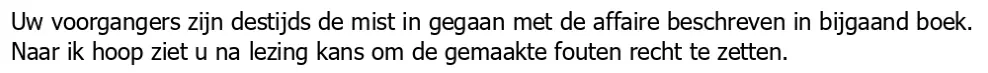

Dokaz · Pismo
Giltay ministrici odbrane, uz treće, revidirano izdanje, 26. aprila 2022.
Odlomak
„Vaši prethodnici tada su teško pogriješili u aferi opisanoj u priloženoj knjizi. Nadam se da ćete nakon čitanja uspjeti ispraviti učinjene greške.“ Stranica 1, tekst pisma, dug dvije rečenice. Prijevod s nizozemskog; izvorni tekst naveden je ispod.
Izvorni tekst
“Uw voorgangers zijn destijds de mist in gegaan met de affaire beschreven in bijgaand boek. Naar ik hoop ziet u na lezing kans om de gemaakte fouten recht te zetten.” Nizozemski idiom „de mist in gegaan“ (doslovno ‚otišli u maglu‘) znači teško pogriješiti; prijevod iznad prenosi smisao, a ne sliku. U predmetu pisma redni broj je napisan izdignuto: „3e herziene druk“ (‚3. revidirano izdanje‘).

Zašto je ovaj dokument važan
Ovim pismom od 26. aprila 2022. Giltay je treće, revidirano izdanje knjige lično dostavio za ministricu odbrane Kajsu Ollongren, uz dvije rečenice: da su njeni prethodnici tada „teško pogriješili“ u aferi koju knjiga opisuje i da se nada da će ona ispraviti učinjene greške. Esej nabraja sedam trenutaka u kojima se nizozemska država u tri ministarstva nije pozvala na državnu tajnu i zaključuje da ta šutnja nije zakonska tajnost, nego izbor. Ovo pismo dolazi nakon tih sedam trenutaka. Od Ministarstva odbrane, kako navodi esej, nije stigla nikakva reakcija.
Porijeklo
- Dokument
- Propratno pismo, jedna stranica
- Pošiljalac
- Edwin Giltay, autor, Hag
- Primalac
- Ministrica Kajsa Ollongren, Ministarstvo odbrane, Plein 4, 2511 CR Hag
- Datum
- Hag, 26. aprila 2022.
- Uručenje
- S naznakom „in persoon afgegeven“ (‚lično predato‘)
- Predmet
- „3e herziene druk De doofpotgeneraal“ (‚treće, revidirano izdanje knjige De doofpotgeneraal‘)
- Prilog
- Sama knjiga. Pismo govori o „bijgaand boek“ (‚priložena knjiga‘); poseban spisak priloga nije odštampan
- Potpis
- „Met vriendelijke groet, Edwin Giltay, Auteur“ (‚Srdačan pozdrav, Edwin Giltay, Autor‘). Vlastoručni potpis je na skenu zacrnjen
- Jezik
- Nizozemski
- Mjesto čuvanja
- Arhiv autora
Citirano u: eseju „Zabrana pala, knjiga opstala“ u poglavlju (7) „Nikada suštinskog odgovora“.
Stranica dokaza: https://
Dokument: https://
Posljednja izmjena 13. septembra 2026., pristupljeno 3. oktobra 2026.

Ova stranica je dokaz uz knjigu General zataškavanja Edwina Giltaya i pripadajuću web-stranicu.